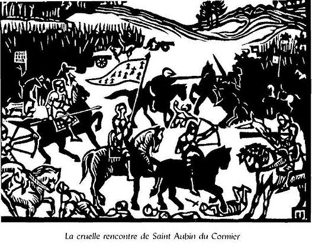

An dialog etre Arzur Roe d'an Bretounet ha Guynglaff
Le Dialogue entre Arthur Roy des Bretons Et Guinglaff
[Ecrit ainsi en françois:] l'an de Notre Seigneur mil quatre cent et cinquante
A résumé in English is available on page Gwenc'hlan's Prophecy, chapter "The Gwynglaff in the "Dialogue with King Arthur"

"La cruelle rencontre de Saint-Aubin-du-Cormier" (28 juillet 1488) par Jeanne Malivel, 1922

AN DIALOG...
Prélude Dre Gracz Doe ez veze.
N'en devoe ezdre voe en beth
Nemet an delyou glas.
N'en devoe quen goasquet.
[5] An rese en beve
N'endevoe quen boet.
Didan un capel guel ez voe,
Noz ha dez en e buhez en beth.
Digant Doe en devoe e gloar en eff,
[10] Ha ne manque quet.
Dre Graçç Doe ez gouuie,
Doediguez flam an amser divin illuminet.
An Roe Arzur en ampoignas da sul,
Pan savas an heaul un mintin mat,
[15] Ha dre cautel ha soutildet
Ez tizas e dorn, hac e quemeret.
Maz goulennas outaff hep si:
Refrain En hanu Doe; me hoz supply,
D'an Roe Arzur ez liviry
[20] Pebez sinou e Breiz a coezo glan
Quent finuez an bet man,
Na pebez feiz, lavar aman:
Pe me az laquay e drouc saouzan.
Guynglaff
Couplet Me a lavar dit a-deffry,
[25] Quement a crenn a goulenny,
Diouziff a gouvezy, nemet da maru ha ma hany.
Calz a fizio en beth muy evyt en Ilis,
An-tra-se a coezo dre vicz,
Huy guelo etre tut a Ilis
[30] Baeleien hep nep justiçç
Pep foll a goulenno offiçç.
|
LE DIALOGUE... : La Vie de Guinglaff
S'il vivait, c'était grâce à Dieu.
Il n'eut pendant qu'il fut au monde
Que feuilles vertes contre l'onde,
Comme unique abri sous les cieux.
Semblable aux bêtes des forêts
Il mangeait les baies et les pousses.
C'est couvert d'une cape rousse
Qu'il vécut sur terre caché;
Mais eut de Dieu sa gloire au Ciel:
Par la grâce de l'Eternel,
Il voyait la venue du temps
Manifestée divinement.
Or, un matin, Arthur le roi,
C'était un dimanche, je crois,
Par ruse s'empara de lui.
Il chercha sa main et la prit.
Lui disant:" Je t'en prie, dis-moi,
Je te prie de dire à ton roi,
Quels événements, quels prodiges
Le Ciel à la Bretagne inflige
Avant que ce monde ait pris fin.
Et à quoi croira-t-on demain?
Dis, ou je te mets mal à l'aise..."
Guinglaff
Pourquoi, grand Dieu, te mentirai-je?
Tu sauras tout, quoi qu'il advienne,
Excepté ta mort et la mienne.
Un jour l'on fera, vice immonde,
Moins confiance aux prêtres qu'au monde:
Vous verrez chez les gens d'Eglise
Des prêtres user de traîtrise,
Tous les fous voudront officier.
|
Titre: "Ecrit en français" est une addition du copiste reproduite par Dom Pelletier.
v.1 "C'était la grâce de Dieu qui le faisait vivre".
Les vers 1 à 12 qui constituent ce que Dom Le Pelletier a nommé "la vie de Guinglaff" ont été coupés en deux par le copiste. On peut conjecturer qu'il fallait lire quelque chose de ce genre:
Dre gras Doue e beve un den, Gwinklañ añvet.
Nemed an delioù glaz n'en-devoa da wasked;
Grwizioù, louzoù ha frouez ar gwez, evel gouezed,
Ar re-se eñ mage, dezhañ ken ne oe boued.
|
Par la grâce de Dieu vivait un homme nommé Guinclan:
Il n'avait que des feuilles vertes pour abri.
Racines, herbes et fruits des arbres: comme les bêtes sauvages
Voilà ce qui le nourrissait. Il n'avait pas d'autre aliment.
|
V.9-12 On peut conjecturer qu'il fallait lire:
Dre gras Doue e ouie seder
Donedigezh flamm an amzer.
Dre gras divin illuminet,
He wele ha ne mañke ket.
|
Par la grâce de Dieu il savait sûrement
La venue éclatante du temps.
Illuminé par la grâce divine,
Il la voyait et ne se trompait point.
|
v.13 "Da sul" (un dimanche) est peut-être, selon Largillière, "da zur" (certainement), mais ce n'est pas l'avis d'Ernault qui souligne que si Arthur agit le matin, c'est pour surprendre le devin dans son sommeil comme le furent Silène dans les Bucoliques et Protée dans les Géorgiques et dans l'Odyssée.
V.20-23 "couezo"= "degouezho", se produira; [23]"Je TE mettrai en mauvaise surprise", alors qu'au vers 18, Arthur vouvoyait Guinclan. Comme au vers suivant, il le tutoie ("liviri="tu diras"), Ernault suppose qu'une erreur a été commise au vers 18.
V.24-26 Ernault conjecture qu'il faut lire (en reconstituant les rimes internes):
Me lavaro bref a -zevri
Kement a-grenn a goulenni
Ha diouzhin rez e gouzouezi
Nemed da fin ha ma hini.
|
Je te dirai succinctement (bref) et sérieusement (a-zevri)
Absolument (kement a-grenn) tout ce que tu demanderas.
Et par moi tu sauras tout (rez),
Sauf ta fin et la mienne.
|
Ernault note que dans les modèles dont l'auteur a pu s'inspirer, le devin adopte une autre attitude: dans l'"Histoire" de Geoffroy de Monmouth, Merlin révèle à Vortigern son propre destin. De même le Protée de l'Odyssée renseigne Ménélas sur ses fins dernières. Tirésias en fait de même pour Ulysse.
v. 27-31 Ernault note que la rime répétée "Ilis" ne peut être qu'inexacte. Il propose de remplacer "baeleien" par "barnerien rust" (pour la rime interne), "juges grossiers".
Arzur
Refrain Lavar, Guinglaff, me a pet,
En hanu Doe so Roe dan beth,
Pebez sinou a coezo quet
[35] Quent evit an guez da donet.
Guinglaff
Couplet Te a guelo quent e donet
An haff han goaff quesmenet,
Ha ne aznavezy heur en beth
Nemet dyouz an guez delyet,
[40] Pe diouz an goeliou statudet.
Neuze ez duy trubuyll meurbet,
Bleau oar penn jouuanc loedet
Gant an berr hoary arrivet,
An beth a bezo quen tanau...
[45] Neb a bezo a guelo gnaou.
Huy a guelo, mar bevet
Quent an guez da donet
An tud a Ilis diguyset
An douar fallaff a roy guellaff,
[50] Han guisty guellaff dimezet;
Hac un hoeresi a puplio
Dre Cristenez, huy a guelo
Hac a tenno da muyha glachar,
Quent ez finuezo an douar
[55] Huy a guelo quent an goursenn,
Hoeretiquet a drouc empenn,
Na sellont pep quis dispenn,
An feiz a Doe so roy ha penn,
Ha rac se ho castio tenn,
[60] Maz vezo truez ho guelet,
Quent evit an guez da donet.
|
Arthur
Dis-moi, Guinglaff, dis-moi, de plus,
Au nom de Dieu, le roi du monde,
Avant qu'Il ne tire la bonde,
Quels signes seront advenus!
Guinglaff
On verra bien avant qu'Il vienne,
L'hiver et l'été confondus:
Et le temps ne sera connu (*)
Que par les fêtes anciennes.
Ou l'arbre qui devient feuillu.
De grands troubles feront pousser
Cheveux gris sur les jeunes têtes,
Dont la vie froide et désuète
Rendra le monde clairsemé.
Puisqu'on dit: "Qui vivra, verra".
Ceux qui vivront, verront, hélas,
Bien avant que ces temps n'adviennent,
Les gens d'Eglise dépouillés,
Au pire sol le meilleur blé,
Les débauchées, les mieux loties,
Et se répandre l'hérésie
Vous verrez, en terre chrétienne,
Ces nouveautés avec tristesse (**):
Avant que la terre ne cesse.
Et que le jugement ne vienne: (***)
Des hérétiques se moquant,
Sans réfléchir aux conséquences,
De Dieu même. Et de cette engeance
Le châtiment sera si lourd
Qu'on sera pris de pitié pour
Eux, avant que ce temps n'advienne. [*]
(*) En l'autre copie il y a mieux: "n'o aznavezeur quet" = on ne les reconnaîtra pas.
(**) Obscur.
(***) "goursenn" inconnu.
|
v.34 "sinou" est le mot "signe" dans le sens de "prodige annonciateur".
v.35 (et 47, 61, 147, 171): "gwez" qui a ordinairement le sens de "fois" signifierait ici "époque". Ernault traduit au vers 35 par "tour", "revanche" (divine).
v.37 Ernault suggère qu'il manque un "fresk" (pour la rime interne) ou un "hag" avant "an hañv".
v.38-44 La remarque (*) de Dom Pelletier signale qu'il disposait de 2 manuscrits avec des variantes. Ernault propose de restituer ces vers comme suit :
Ha neb eur n'anavezer ket,
Nemed diouzh ar gwez hel deliet
Pe ar gouelioù mat statudet.
Neuz' e gweler trubuilh meurbet:
Blev war penn yaouank deuet louet.
Gant ar berr-hoazl riouet
Ar bed a vezo moan-tanav.
|
Et l'on ne reconnaîtra plus les saisons
Qu'aux arbres joliment feuillus.
Ou aux fêtes bien établies.
Alors on verra bien des tribulations:
Les cheveux grisonneront sur la tête des jeunes gens
Dont la vie courte et glacée
Rendra la population rare et parsemée.
|
v.45 Le mot "gnaou" (exactement) est donné dans le dictionnaire de Le Pelletier d'après ce texte. (Curieusement, il semble correspondre pour le sens à l'allemand "genau"). Le v.47 est mal rendu. Il faut comprendre "avant que ne vienne le consommation des temps".
V.49-50 L'expression est attribuée à Guinclan par Kerdanet dans ses "Vies des Saints d'Albert le Grand".
Il manque, à la fin du premier vers, le mot "ed" (blé) auquel Le Pelletier supplée dans sa traduction.
Ernault suppose que Kerdanet a dû trouver ce proverbe dans la tradition populaire. La Villemarqué le reprend dans le Barzhaz (p.24 dans l'éd. de 1867) comme "cité par Dom Le Pelletier qui l'a copié sur le manuscrit original", ce que la revue "Mélusine" (x, 160) avait contredit (à tort, comme on le voit).
L.F. Sauvé, dans ses "Proverbes et Dictons de Basse-Bretagne" (Lavaroù koz a Vreizh-Izel) publiés en 1878, cite le proverbe en entier:
A-barzh e vezo fin ar bed
Ar fallañ douar gwellañ ed,
Ar fallañ merc'h gwellañ dimeet
Hag ar besterd araog o'ch ober tro 'r vered.
|
D'ici qu'arrive la fin du monde,
A la pire terre, le meilleur blé
A la pire fille, le meilleur parti
Précédée des bâtards qui feront le tour du cimetière.
|
v. 51 Ernault traduit "puplio" par "deviendra publique"
v. 55 le mot que cherche Le Pelletier est "gourfenn", la fin.
v. 57 "Pep quiz": lire "pep giz". "Na sellont a beb giz dispenn"= "qui ne regarderont pas à détruire de toute façon"
[*] De nos jours, nous dirions que ce passage annonce le dérèglement climatique, la pollution du globe et le triomphe de l'athéisme!
|
Arzur
Refrain Lavar diff Guinclaff, me a pet,
En hanu Doe so roe dan beth:
Petra vezo a coezo quet
[65] Quent evit an-tra-se d'arrivet?
Guinglaff
Couplet Pan vezo Duc en Estampes
Ne vezo den en Breiz hep reux,
En bloaz mil pemp-cant triuguent ha dec (1570)
Ez vezo an puch criet,
[70] Maz lavarer e pep kaer, gouezet,
Ez vezo an bresel finisset.
En bloaz mil pemp-cant [tri-ugent] hac unnec, (1571)
Ez savo mension meurbet,
A bresel ha ne pado quet.
[75] En bloaz [mil pemp kant] douzec ha triugent(1572)
Ez vezo bresel ha meruent.
En bloaz [mil pemp kant] triugent ha trizec (1573)
Ez vezo an beth dipreder
En esamant tout entier.
[80] Goud-se ez duy devry
Sauson cals ha diavaezidy
A duy hep si diouz Orient,
Dren bro gant gourdrousc ha cry,
A laquay Breiz e mil sourcy,
[85] Oz breselequaat peur defry.
E triugent ha pevarzec, (1574)
Pan vezo da sul dez Nedelec,
Gue[r]z da cazec, ha pren yt
Ha marteze ez vezo ret.
[90] En bloaz triugent ha pemzec, (1575)
Ez vezo an yt difiget[...]
En bloaz seiz ha pevaruguent, (1587)
Ez collo an Autronez ho rent:
Ilis ha terrien antier (*) oll a commanço seder
[95] Doufarz ha trederenn ez ranner.
En bloaz mil pemp cant pevarugent ha eiz, (1588)
Ez vezo truez gant bresel e Breiz:
Ha quent pevaruguent hac eiz
Ez vezo adarre he guir aer e Breiz.
[100] Herry map Herry, ha dou Baron (**) da Herry
A duy, ne fazio quet,
Diabell bro, hac a vezo enoret,
Hac a laquay Beiz hep moneyz.
Calz a calon mam a vezo rannet,
[105] Hac yvez lazet;
Hac ez vezo entre pep ty
An bresel criet.
Un laerz a savo a Goelou
Hac a taulo Breiz oar he genou.
[110] Neuze ez lazer pep Autroi
Gant clezefflou dir hac armou.
Her drevezo dour en tnou glan.
Pep tieguez a vezo goazha e rann. (***)
Hac e metou tnouen Ry.
[115] Ez duy Jacob d'auber e ty
Ha gode se glan damany
Ez vezo eno defry
ma forcher eno Abaty,
Da pep sort gant an flechy.
[120] War creis pont (Lez] Ry, hep neb si.
E savo alarm diboell ha cry.
Ha ne pado nemeur ho cry
Maz duy muguet mil digentil diblas,
Na vezo deza comparaig,
[125] Hac an rivier so hanvet Dourgoat,
A chencho he liou ha he stat,
Hac a hano ez duy an rivier un tro.
An tra se so estimet d'en bro,
Nep a vezo a guelo hep sy
[130] En guelo glan damany.
Cals a vezo a listry
Azrouaentet digoezien.
|
Arthur
Dis-moi donc, Guinglaff, je te prie,
Au nom de Dieu, le roi du monde,
Avant ce futur que tu sondes,
Subirons-nous des avanies?
Guinglaff
Quand le Duc récupère Etampes,
Pas un Breton qui n'ait d'ennuis.
En 1570,
Une paix sera proclamée,
Et dans chaque ville "criée":
"Sachez que la guerre est finie!"
Puis au cours de l'année suivante (1571)
Nait une rumeur lancinante
De guerre qui bientôt s'éteint.
Oui, mais hélas, l'année qui vient (1572)
Connaît guerre et mortalité.
En 1573
Tout le monde se pâme d'aise,
Chacun jouit d'un bonheur parfait.
Puis on voit tout cela changer:
Beaucoup d'étrangers, de Saxons,
D'étrangers qui de l'est viendront,
Plein de courroux, poussant des cris,
Et nous causant mille soucis:
En vérité, la guerre est là.
1574,
- Lorsque Noël tombe un dimanche -
"Vends ta jument, acquiers du blé"
Le dicton semble s'imposer,
Car au cours de l'année d'après (1575)
Le blé viendra fort à manquer...
En 1587
Bien des Messieurs perdront leurs rentes,
L'Eglise et les terriens d'abord:
Un tiers, deux tiers pour le plus fort.
En 1588
La pauvre Bretagne est en guerre,
Car au cours de l'année dernière,
L'hoir naturel revint ici,
Henri, le propre fils d'Henri
Et ses deux barons (ou "parrains") avec lui.
Venus de loin, on les honore.
Mais eux, détruisent la monnaie.
Les curs des mères tiraillés
Sont pour ainsi dire brisés (ou blessés à mort):
Chaque maison et sa voisine
Se font une guerre assassine.
Un voleur surgit du Goélo
Qui jette la Bretagne à terre.
Et l'on tuera chaque seigneur
Avec des épées et des armes
(Que d'eau, dans la vallée de larmes!)
A chaque famille son deuil
Et au milieu du Val-du-Ry
Jacob ira bâtir son nid.
Et après cela...
Cela empirera
On forcera une abbaye
Et ce, de toutes les manières...
Et au milieu de Pont-du-Ry,
Jaillit une alarme furieuse.
Mais ce cri ne durera pas.
Car mille cruels gentilshommes
Viendront, à nuls autres pareils:
Le ruisseau nommé l'"Eau de sang"
Changera de couleur, de lit
C'est de là que viendra son nom,
A ce que l'on pense au pays.
Qui vivra, pour sûr, le verra,
Verra... (leur pouvoir éclatant).
Il y aura force navires
D'où les (ennemis accourront)
|
Arzur
Refrain Lavar, Guinglaff, me a ped,
En hano Doue zo Roue ar bed:
[135] Petra vezo a coezo quet
Pa vezo an-dra-se c'hoarvezet?
Guinglaff
Couplet Huy a guelo war an douar an gwez
Discarret gant rust amser,
Hac an rivieroù debordet,
[140] En amzer ma'z meder an ed.
Car tud gaillard ha paillarded
Sikour a rencont da voned,
Dre o bezaff quent langouret
Pa vezo beleien hep quet a reiz.
[145] Ha gant an groaguez collet mez,
Hag aet karantez war divez
Ariff eo gant Guengamp he guez.
Un duc a deuy da Vreiz a Frans,
A lakay ar vro hep chevañs
[150] Ha hennez a collo gant tut e ty,
Dre re fiancz.
Tailhoù a lakay kalz meurbed,
Unan a deui ne paehor ket,
En divez ez vezo criz gant mainer,
[155] Ha c'hoari kreñv,
Hag an trede a deuy (avezo devri)
Ma'z dezroo an devet gant kriz
Hep quet a si, ha tagaff a devri
Ha trechiff war an holl beleien.
[160] En bloaz pevarugent hag eiz (1588)
E deui ar Saozon e Breiz
Doned a ra hini a flot meurbed
Pa ne gouezhor quet an pred.
Ar peoc'h kerz a vezo kriet
[165] En bloaz quent evit ho donet
E Breiz e pep kaer gouvezet.
Un duc a yelo a Breiz e Frans
Gant meur galloud ha puissans,
Ha gode kerz hep setancz
[170] Ez puniser dre martirizancz.
Heb faot, pa vezo ar gwez kouezet,
Saozon e Perzell (*) diskennet,
Ha Brest, ne fazio ket,
Da Leon ha da Gwengamp, kredit!
[175] Pa n'ay an Saozon war ar mor.
Da vrezelekaat gant enor,
Ez deuy an avel tempestuz
Ma'z vezint graet morchedus.
Ha dre hir spas e digachor,
[180] Ha da Leon ha da Treger
Ma'z diskennint e teir bandenn
E Brest Goeloù ha Porz-Gwenn.
Sec'h vezo ar boaz ma'z deont diskenn,
Rag ar profesi a kelenn,
[185] Hg pa'n prederhor bihanaff
Ea arrivint a credaff
Ur sul beure e-kreiz an hañv.
Ma'z savo alarm gant armoù
En Bretoneri knech ha tnou,
[190] Hag etre tud burzudaou
Gant an alarm ha marvailhoù
Brest ha Leon, an Porz-Gwenn
A kemerint goude-hen
Saozon a futin arrivet guenn
[195] A vezo quen theo ha gelvenn
A-hed an douar hag al lenn
Goap neb a vezo o tifenn,
Ma ne vez e gras Doue Roue glenn
Y a losko kanolioù,
[200] Evit lazañ an tud a armoù
Ha lakaat sig war ar kaerioù
Diskar kestel ha tourelloù
Pan krier e Breiz ar brezelioù
Neuze, e vezo ken kruel,
[205] Ma'z renko an ezec'h fall ha grwagez
Moned da vervel ditruez
Dindan poan da vezañ dipennet
Gourc'hemennet don d'ar Vretoned,
Koulz d'ar re di-arm ha re armet,
[210] Da stourm ouzh o azrouanted moned,
Ma'z dastumont fall ha seven,
Dre gourc'hemenn ur kabiten,
Gant armoù fall ha paltoioù,
Hag ar gwragez o sikouro.
[215] Ma'z marvint oll a strolladoù
War Menez-Bré, a bagadoù
Hag ar Saozon dren hent equipet
A vezo meurbet armet guenn.
Gwaz a vezo ar Vretoned
[220] Mar tec'hont holl evel deñved
Peurmuiañ ez vezint lazet
Gant ar Saozon direzonet.
Neuze ez ahint gant vaillantez
Da lakaat seziz war Wengamp
[225] Ma 'z vez Boy Ivon estonet
Rag ne gouizie ket o doned.
Ar madoù a vezo kuzhet
Hag an toulloù kuzh taolet,
Hag ar porzhioù kloz a hast serret
[230] Dre hazard don gant kanolioù
Ez pilhont (fizier) ar mogerioù
Hag e diskarront ar murioù
Ha terriñ e Gwengamp an oll kambroù,
Ha pilhad oll an oll madoù
[235] Hag an oll dud en em rento.
Hag etre bremañ ha neuze
E vezo spont braz, rag se,
Rag en divez n'arriuhe.
Pa vezo Gwengamp diskarret,
[240] Ez forzhor grwagez ha merc'hed
Hag e lazher ezec'h ha gwragez,
Ha Doue d'an fet a permetto
Hon punisso evit em reuengaff.
Ar Saozon a yelo c'hoaz adarre
[245] Hep neb remorz hag estok,
En ur vandenn, an oll Saozon
Da kemered e Breiz posesion.
FINIS
Ego Dom Yann Quéau exscripsi die decima sexta Augusti anno Domini 1619
|
Arthur
Mais dis-moi, Guinclan, s'il te plait,
Au nom de Dieu, le roi du ciel,
Qu'à coup sûr arrivera-t-il
Quand cela se sera produit.
Guinglaff
Vous verrez sur le sol les arbres
Renversés par les ouragans
En pleine saison des moissons
Et les rivières qui débordent.
Car les débauchés, les impies
Reçoivent une aide traitresse
Des gens coupables de mollesse:
Prêtres de la règle oublieux,
Ainsi que femmes sans vergogne.
La charité n'aura plus cours:
C'en sera fini de Guingamp...
Les Bretons voient venir de France
Un Duc qui ruinera leurs biens.
Lui, sa maison, perdront leur chance,
Pour avoir bien trop fait confiance,
Il nous écrasera d'impôts.
Un autre en veut à nos trésors:
Si le manque d'argent l'obsède,
Le tumulte est bien pire encor.
C'est alors qu'en vient un troisième:
Loup qui se rue sur les brebis,
Il les dévore et se démène,
Réduit les prêtres à merci:
Puis en l'an quatre vingt et huit (1588),
En Bretagne le Saxon vient!
Il apprête une flotte immense
Cela, sans qu'on n'en sache rien.
Certes, l'on proclamait la paix
Un an avant cette échéance
Dans tous les chefs-lieux du Duché...
Un Duc va de Bretagne en France,
Il est chargé des pleins pouvoirs.
On l'exécute sans sentence,
Une torture horrible à voir.
Il en est ainsi, croyez-moi!
Et l'Anglais débarque à Bertheaume (*)
Ainsi qu'à Brest, destin amer,
A Guingamp, en terre Léonne.
Lorsque l'Anglais ira sur mer
Faire la guerre aux gens d'honneur,
S'élèveront des vents d'orage
Qui sa course ralentiront
Et son terme retarderont.
Ces soudards seront égaillés
De Saint-Pol jusques à Tréguier.
Ils débarqueront en trois corps:
A Brest; en Goélo; au Blanc-Port (Porz-Gwenn),
En période de sécheresse.
C'est la prophétie qui le dit.
Donc c'est en ce temps de détresse
Qu'ils viendront, comme il est prescrit.
Tôt le dimanche, en plein été.
On lancera l'appel aux armes
Par monts et par vaux, en Bretagne.
Et s'accompliront des prouesses!
En vain! Bientôt ils auront pris
Brest, Saint-Pol, Port-Blanc sur la Manche.
Les Saxons aux cuirasses blanches
Pullulent tels des passereaux,
Le long des landes et de l'eau.
Malheur à qui veut se défendre,
Privé de la grâce de Dieu:
Aux canons ils boutent le feu,
Déciment les hommes en armes
Et mettent le siège aux cités.
Châteaux et tours sont renversés...
La Bretagne entre dans leur guerre,
Pour des combats tant acharnés
Que mariés malades et femmes
Se voient sacrifiés, chose infâme!
Qui refuse est décapité.
On met les Bretons en demeure,
Qu'ils soient mains nues ou bien armés,
D'aller affronter l'ennemi;
Les canailles et gens de bien,
Sous les ordres d'un Capitaine,
Mal armés, en manteaux de laine,
Les femmes sont leur seul soutien.
De sorte qu'ils mourront en foules,
Sur le Ménez-Bré, en troupeaux.
Propulsés par la blanche houle
Des Saxons armés de couteaux.
Les Bretons seront pris au piège:
Ceux qui voudront s'enfuir seront
Presque tous tués, quel sacrilège!
Par ces forcenés de Saxons.
D'autres iront avec courage
Assiéger les murs de Guingamp.
Pour Bois-Yvon c'est un mirage:
Que de les voir là maintenant.
Et l'on veut cacher toutes choses
Dans des trous qu'on aura creusés.
Et l'on court fermer les cours closes...
Peine perdue, quand des canons
Frappent et brisent les murailles,
Que sur Guingamp pleut la mitraille,
Que les portes perdent leurs gonds.
Et les biens de tous sont pillés.
Et tout le monde doit se rendre...
Tant que ces jours se font attendre,
On ne cessera de frémir
Jusqu'alors, depuis aujourd'hui.
Puis, une fois Guingamp détruit,
Violées les femmes et les filles
Et tués tous ces gens qu'on pille:
Dieu veut, après tant de souffrance,
Encore assouvir sa vengeance:
Les Saxons iront par les landes,
Sans remords et sans coup férir,
Voyant à leur immense bande
Toute la Bretagne s'ouvrir.
FIN
Traduction Christian Souchon (c) 2013
(*) C'est une rade à l'entrée de Brest,
en dedans de la Pointe Saint-Mathieu, où il y a
entre autres un rocher fortifié, garni de mortiers
et de canons, nommé en breton "Kastel Perzell" ou
"Château Bertheaume".
|
V. 140 "mediñ" = "moissonner"; v. 146 "aet war diwezh" = "a touché à sa fin"; v. 147 "ariff"= "erru" (arrivé);